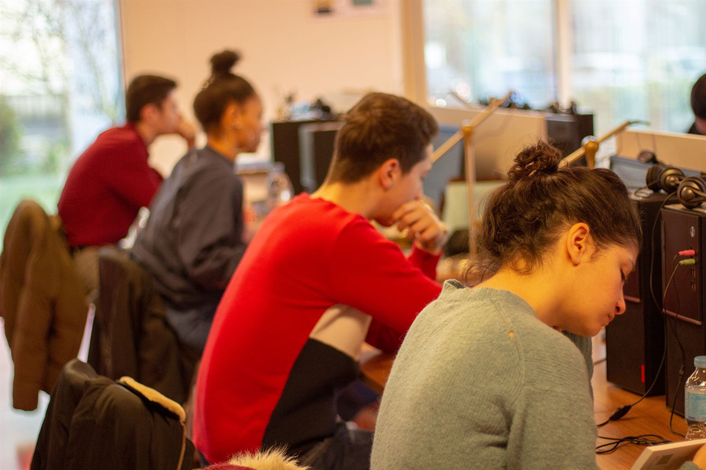

Accueil › Démarches › Formations & Emploi › Digitale Académie
Digitale AcadémieMontereau-Fault-Yonne · Surville
Service municipal d’aide à la réussite des études supérieures diplômantes et des formations certifiantes.
Vue aérienne : modèle numérique de surface et orthophotographies IGN (Licence ouverte Etalab 2.0) · lointains AWS Terrain Tiles (SRTM, EU-DEM) · noms des lieux © contributeurs OpenStreetMap (ODbL)
Le campus
Accueil : image générée d’après les photos des vraies salles image générée · à valider
1 accueil · 5 salles équipées d’ordinateurs et de casques · 1 salle de réunion · 1 coin cuisine à valider
Salle 01
Un espace d’accueil, une cafétéria et un coin cuisine.
Salle 02
Ordinateurs et casques individuels dans chaque salle.
Salle 03
Portrait peint sur fond jaune.
Salle 04
Portrait peint sur fond vert.
Salle 05
Des salles de travail à dimension humaine… et ce grand papier peint de bibliothèque.
Accueil : image générée d’après les photos des vraies salles image générée · à valider. Salle informatique, salles Frida Kahlo, Nelson Mandela et salle d’étude : photographies de la Ville. droit à l’image à valider
Les formations
Plus de 3 000 formations post-bac suivies à distance, du BTS au Master.
Accès au supérieur
Diplôme d’accès aux études universitaires. Il donne les mêmes droits que le baccalauréat pour poursuivre des études supérieures.
Bac+2
Brevet de technicien supérieur, diplôme national préparé en deux ans.
Bac+3
Diplôme national de l’enseignement supérieur, délivré par une université.
Bac+3
Diplôme propre à un établissement. Sa reconnaissance dépend de chaque programme (titre RNCP, visa ou grade).
Bac+5
Diplôme national de l’enseignement supérieur, préparé en deux ans après la licence.
Durée variable
Diplôme d’université, propre à chaque établissement. Sa durée et son niveau varient.
à valider Définitions générales, en attente de relecture par la Digitale Académie.
Photo : George Peabody Library (Baltimore), la bibliothèque du papier peint de la salle d’étude — Patrick Gillespie, CC BY 2.0 (nouvelle fenêtre)
Le parcours
Prendre rendez-vous pour visiter les lieux et parler de ton projet d’études avec un conseiller pédagogique.
Choisir parmi plus de 3 000 formations post-bac à distance, du BTS au Master, ou préparer le DAEU.
L’équipe aide aux inscriptions en ligne.
Travailler dans 600 m² connectés à la fibre, en ville haute.
Deux coachs suivent ton travail et animent des ateliers.
Des ateliers pour tenir le rythme : méthodologie, préparation aux examens, anglais.
Les coachs aident aussi à trouver un stage.
Photo : George Peabody Library (Baltimore), la bibliothèque du papier peint de la salle d’étude — Matthew Petroff, CC BY-SA 3.0 (nouvelle fenêtre) · verrière : Patrick Gillespie, CC BY 2.0

L’accompagnement
Les ateliers à actualiser
Photo : George Peabody Library (Baltimore), la bibliothèque du papier peint de la salle d’étude — Patrick Gillespie, CC BY 2.0 (nouvelle fenêtre)
Nous trouver
Montereau-Fault-Yonne est au confluent de la Seine et de l’Yonne.
Campus connecté. C’est à la Digitale Académie que la ministre de l’Enseignement supérieur a lancé, le 3 mai 2019, les 13 premiers Campus connectés de France. source à relire
Vue 3D : modèle numérique de surface et orthophotographies IGN (Licence ouverte Etalab 2.0) · noms des lieux © contributeurs OpenStreetMap (ODbL)
Appeler · 01 82 34 01 41 Écrire à la Digitale Académie
Si tu ne vas pas à l’Université, l’Université vient à toi.